Menu
June 2018
Our menu is prepared daily from fresh , local flavour. Our menu is seasonal, meaning it changes according to availability of ingredients. This means we never pay for out of season items, and the good flavor and savings that result can be passed on directly to you. Below you can see a sampling of some of our customer’s favorite dishes. Specials vary daily and are posted out front, or you may call to find out ahead of time at 1.555.678.9876
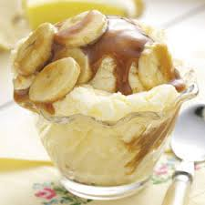
 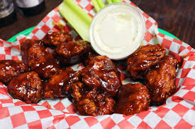
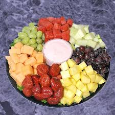
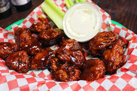
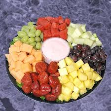
Starters
● Banana Caramel
● Bread Pudding
● Boneless Wings
● Chesse and Fruit Tray
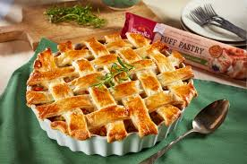
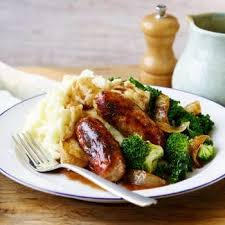
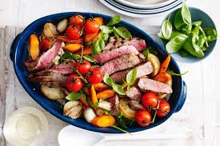

Entrees
● Shephred's Pie
● Bangers and Mash
● Filet and Vegetable of th Day
● Fish and Chips
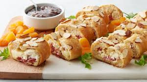
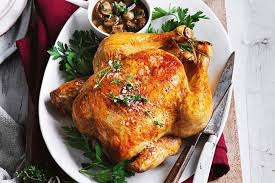
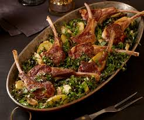
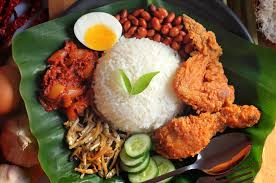
For the Table
● Bread of the Day
● Whole Roasted Chicken
● Rack of Lamb
● Nasi Lemak
Contacts Us
1.555.678.9876
contact@theblueleopa.my